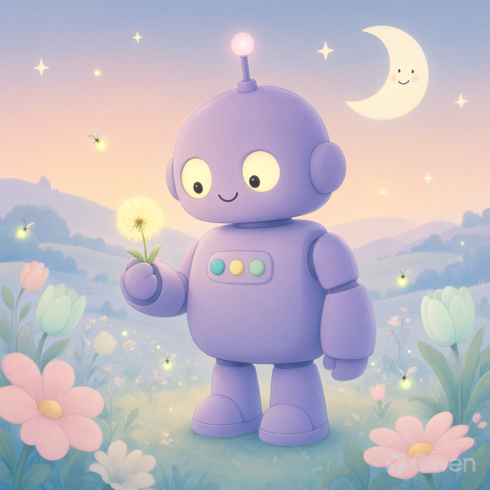

Привет, юный сыщик! Помоги мне пройти пять коротких миссий, разгадай спор Робота Ворчуна, а в конце сыграй в одну большую логическую игру!
Вот где ты запутался. Давай разберём:

Большая игра логических сыщиков
Могут ли ОБА факта быть правдой одновременно?
Ничего страшного! Даже профессора ошибаются — и то хорошо, что ты дошёл сюда.
Главное из главы: логика изучает, как правильно строить мысли. Хорошая мысль ясна, не спорит сама с собой, её шаги идут по порядку, а догадка опирается на причины или подсказки. Одна и та же мысль может говорить о разных вещах, но иметь похожее строение — словно одинаковый каркас у разных домиков. Мы выражаем мысли словами и проверяем их фактами.
Давай пройдём главу ещё раз — со второго раза у тебя обязательно получится!
Мастер Логики